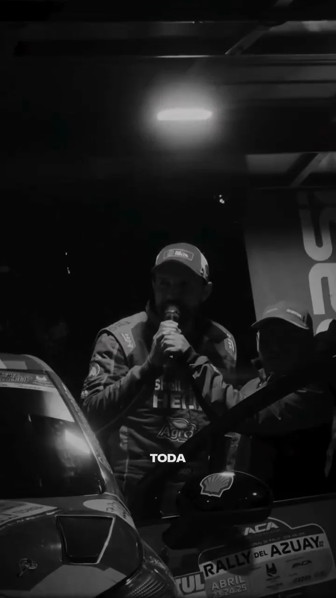
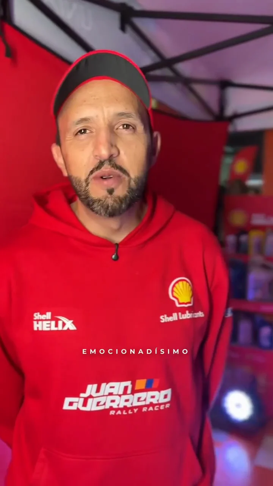
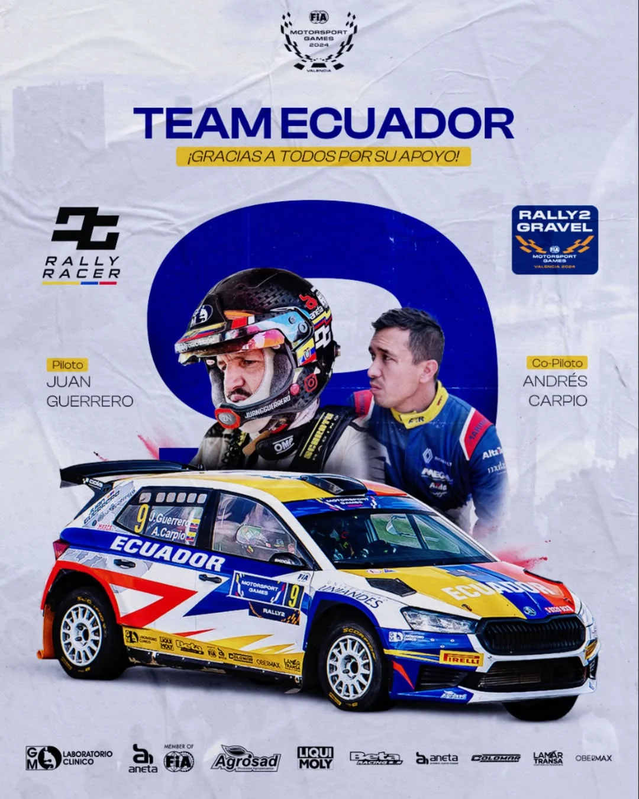
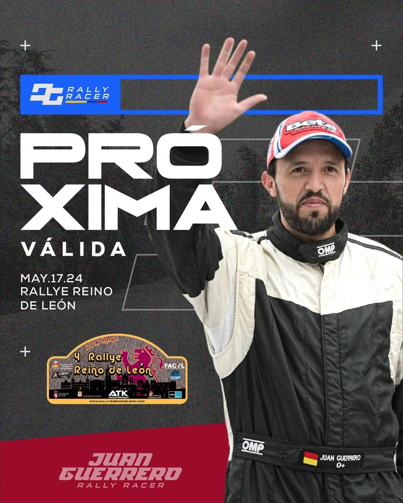
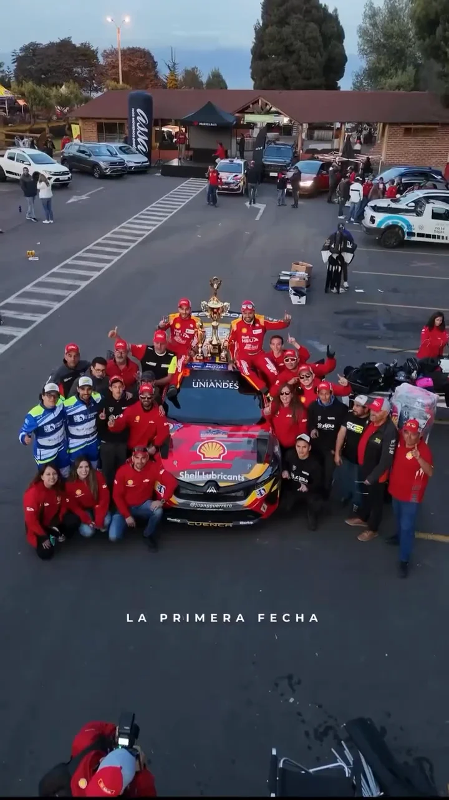
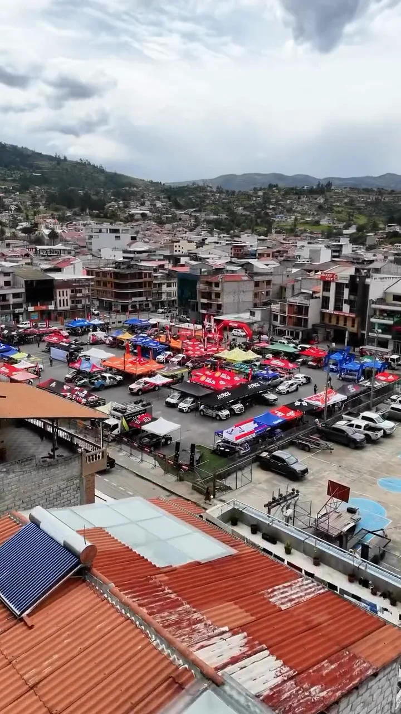

Juan Guerrero
Más de 16 años en el automovilismo y una nueva temporada a bordo del Renault Clio Rally 3.
seguidores en Instagram
reproducciones de su in-car del último prime
engagement promedio sobre reproducciones
primeros lugares (declarado)
Por qué una marca lo elegiría
Piloto de rally con base en Cuenca, representa a Ecuador en el campeonato nacional y en fechas internacionales. En 2026 lideró el Rally de Piura en Perú y ganó la general en Ambato y en el Rally Azuay.
- 2014 · 2017 · 2023Tricampeón de la Vuelta a la República (declarado)
- 2022Campeón Nacional RC2N (declarado)
- 2024Primer ecuatoriano en los FIA Motorsport Games, Valencia (declarado)
- 20253.º en el Rally de las Naciones, Perú (declarado)
- 20261.º de la general en Ambato y en el Rally Azuay; líder del Rally Piura
Lo que construimos juntos
Cobertura en tiempo real, activaciones con marcas, arte gráfico y resúmenes de carrera. Solo piezas creadas en colaboración con Pro Motion.







Datos de Instagram al 21 de octubre de 2026 · @pro_motion.ec
Quién lo sigue
86 % hombres · 14 % mujeres (entre quienes Instagram clasifica). Núcleo de 25 a 44 años: 70 %. Una comunidad muy concentrada en Ecuador: ideal para marcas con distribución nacional.
Sobre 8.927 seguidores que Instagram clasifica por género.
- Otros países2,8 %
Seguidores de Instagram · datos de Metricool al 27 de octubre de 2026
¿Qué marca encaja con Juan?
Toca un sector para ver una idea de activación basada en lo que su contenido ya demuestra.
Elige un sector.


Ficha tentativa elaborada por Pro Motion Sport Marketing con datos públicos de Instagram (octubre de 2026) y la auditoría ProMatch del 2 de agosto de 2026. Los logros marcados como “declarado” fueron entregados por el deportista o su equipo. El puntaje ProMatch mide la preparación comercial observada en el contenido, no la probabilidad de conseguir un auspicio, y no implica un acuerdo comercial vigente.
Diseñemos una activación con Juan
Recibe una propuesta de activación con entregables, calendario y rango de inversión.